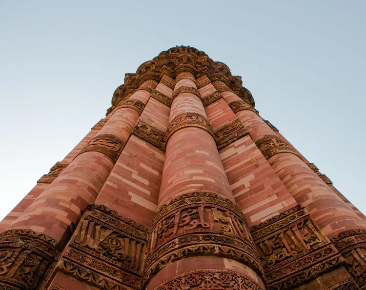

The Ultimate Guide to the Qutub Minar

Delhi's Qutub Minar is the tallest brick minaret in the world and one of the most popular monuments in India. Its rather dizzying height of 238 feet (72.5 meters) could be the size of a modern 20 story high-rise residential building! The monument's stark, soaring appearance evokes a sense of mystery, as do the extensive Hindu and Muslim ruins around it. The ruins reflect the violent end of Hindu reign in Delhi in the late 12th century and takeover by the Muslims. In recognition of its historical importance, the Qutub Minar complex was named a UNESCO World Heritage Site in 1993.
Location
The Qutub Minar is located in Mehrauli, in South Delhi. This neighborhood is about 40 minutes south of the Connaught Place city center. The closest Metro train station is Qutub Minar on the Yellow Line. It's about 20 minutes walk from there to the monument. The distance can be covered on foot during the cooler winter months.
When to Go
The Qutub Minar complex is open daily from sunrise until sunset.
The best months to visit are between November and March, while it's cool and dry, with February being ideal.
The complex does get crowded during the day, and especially on weekends. Hence, those who arrive early in the morning will not only get rewarded with the monument being illuminated sun's first rays but also relative peace.
Getting There
Aim to visit as early as possible in the morning before the crowds arrive. If you're not staying late, it's recommended that you leave by 4 p.m. to avoid the insane rush hour traffic.
Take the Delhi Metro train.
Opening Hours
The opening time of Qutub Minar is 7 AM and it is best to visit the monument during early morning hours to avoid the crowd.
The closing time of Qutub Minar is 5 PM. It is open all days of the week..
Entry Fees and Information
Ticket prices increased in August 2018 and a discount is provided on cashless payment.
Cash tickets now cost 40 rupees for Indians, or 35 rupees cashless.
Foreigners pay 600 rupees cash, or 550 rupees cashless.
Children under 15 years of age can enter for free. The ticket counter is situated across the road from the complex's entrance.
Indians may have to wait up to an hour to be served during busy times. To avoid this, it's possible to buy tickets online.